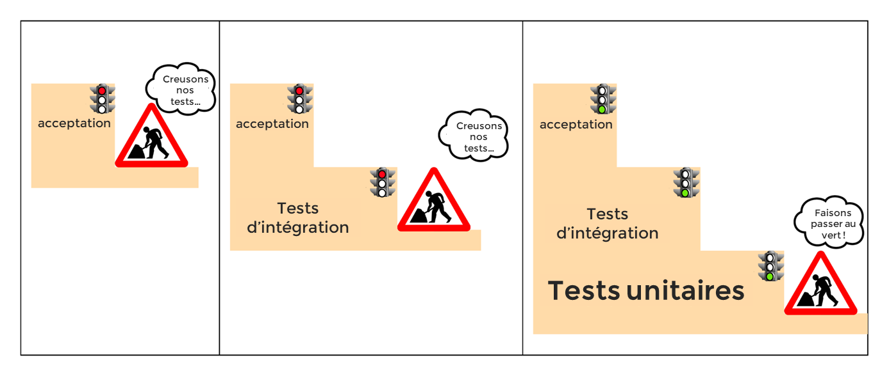
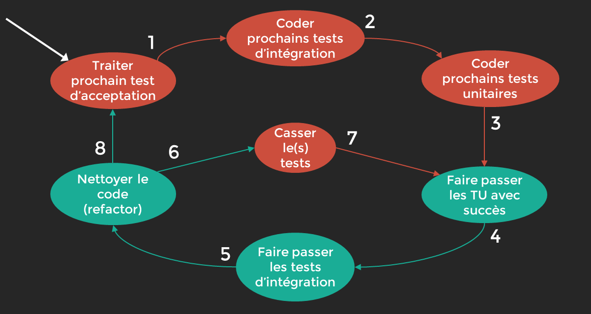

Tests d’acceptation¶
Définition¶
Permettent de vérifier directement les exigeances métier exprimé par le client. Ils sont indépendants des test unitaires d’intégration classiques et des test de fonctionnnels. Ils se situent en travers de la pyramide !
En général on fera des tests d’acceptation le plus tot possible avec des test d’intégration systeme (SIT). On utilisera les @Tag pour les regrouper parmis les SIT.
ATDD/TDD de Londres¶
Acceptance Test Driven Developement
Démarche a suivre¶
On commence par les Test d’accaptation et ensuite on descend la pyramide
{kind=link}
Convention¶
Tout comme les tests unitaires RED-GREEN-REFACTOR on a le schéma suivant:
{kind=link}
Création par l’exemple¶
On part de la user story(notre test d’acceptation) :
« un utilisateur doit pouvoir additionner deux nombres et voir leur somme »
Etape 1¶
Commencez par écrire un test fonctionnel rouge.
Ce test ne doit pas se préoccuper de l’aspect de la page web, mais peut automatiser la visite d’une page web, la sélection de deux nombres, et le clic sur un bouton « = ».
Etape 2¶
Exécutez le test rouge ci-dessous, et il échouera car vous n’avez pas construit votre serveur web :
Type de test |
Nom du test |
Ce qui est testé |
|---|---|---|
Test d’acceptation |
un utilisateur doit pouvoir additionner deux nombres et voir leur somme |
Un utilisateur visite une page , entre 2 nbres, clique sur « = » et voit le résultat |
Etape 3¶
Ecrivez un test d’intégration pour un serveur web auquel vous pouvez envoyer deux nombres :
Type de test |
Nom du test |
Ce qui est testé |
|---|---|---|
Test d’acceptation |
un utilisateur doit pouvoir additionner deux nombres et voir leur somme |
Un utilisateur visite une page , entre 2 nbres, clique sur « = » et voit le résultat |
Etape 4¶
Choisissez votre framework favori (comme Spring Boot) pour construire un contrôleur auquel vous pouvez envoyer deux nombres
Etape 5¶
Exécutez vos tests de bout en bout et d’intégration rouge : le serveur ne fait toujours rien de vos nombres
Etape 6¶
Ecrivez un cas de test unitaire rouge pour de nouvelles classe et méthode :
Calculator.add(Integer a, Integer b) ;
Etape 7¶
Créez Calculator.add, et vos tests sont rouges :
Type de test |
Nom du test |
Ce qui est testé |
|---|---|---|
Unitaire |
add_Sums_PositiveAndPositive |
Calculator.add(1, 1) |
Unitaire |
add_Sums_NegativeAndPositive |
Calculator.add(-1, 1) |
Unitaire |
add_Sums_NegativeAndNegative |
Calculator.add(-1, -1) |
Unitaire |
add_Sums_PositiveIntegerAndZero |
Calculator.add(1, 0) |
Unitaire |
add_Sums_ZeroAndZero |
Calculator.add(0, 0) |
Etape 8¶
Faites fonctionner Calculator.add et tous vos tests passent au vert
Etape 9¶
Nettoyer Refactorez,votre code et assurez vous qu’il reste vert
Etape 10¶
Passez a l’ecriture des autres cas de test unitaire pour la meme fonctionnalité, en prenatn en compte les scénarios alternatifs/linmites
Etapes 11¶
Ecrivez un autre test d’intégration et répétez les Etapes 3 à 10
Type de test |
Nom du test |
Ce qui est testé |
|---|---|---|
Intégration |
GivenBadValue_WhenAdd_ThenAnErrorIsReturned |
Le serveur démarre, le controle valide l’input et fournit une erreur |
Unitaire |
add_ThrowsException_AddingToNull |
Calculator.add(null, 1) |
Unitaire |
add_ThrowsException_AddingNull |
Calculator.add(-1, null) |
BDD¶
La Behavior Driven Developement. Il s’agit du meme principe que l’ATDD sauf que l’on veut garder un langage naturel pour qu’il soit compris par un utilisateur ou le product Owner
Base de départ¶
On part donc non plus d’une user story mais d”un récit utilisateur ie:
Note
Fonctionnalité: Additionner deux nombres
Que veut l’étudiant: En tant qu’étudiant, je veux additionner deux nombres positifs pour pouvoir faire des calculs plus complexes
Exemple: En supposant qu’un éleve utilise le calculateur quand 2e t5 sont additionnés, on devrait montrer 7 a l’étudiant
Cucumber¶
c’est un outils qui permet d’automatiser le dev en BDD
il décrit des scénaris avec le langage naturel dans un fichier .feature
permet ensuite de créer des tests d’acceptation lisible par un client avec un lanceur CucumberAIT.java
permet ensuite de créer des tests d’intégration avec des classes type Step récupérant les GIVEN WHEN ET THEN correspondant à ceux du fichier .feature
du coup les tests sont beaucoup plus lisibles pour tout le monde
configuration¶
1. pom.xml¶
Il faut parametrer le pom xml avec les dépendances suivantes
<!-- https://mvnrepository.com/artifact/org.junit.vintage/junit-vintage-engine -->
<!-- permet d'utiliser Junit 4 avec Junit5 car cucumber fonctionne avec le Junit4 -->
<dependency>
<groupId>org.junit.vintage</groupId>
<artifactId>junit-vintage-engine</artifactId>
<scope>test</scope>
</dependency>
<!-- https://mvnrepository.com/artifact/io.cucumber/cucumber-spring -->
<dependency>
<groupId>io.cucumber</groupId>
<artifactId>cucumber-spring</artifactId>
<version>${cucumber.version}</version>
<scope>test</scope>
</dependency>
<!-- https://mvnrepository.com/artifact/io.cucumber/cucumber-junit -->
<dependency>
<groupId>io.cucumber</groupId>
<artifactId>cucumber-junit</artifactId>
<version>${cucumber.version}</version>
<scope>test</scope>
</dependency>
<!-- https://mvnrepository.com/artifact/io.cucumber/cucumber-java -->
<dependency>
<groupId>io.cucumber</groupId>
<artifactId>cucumber-java</artifactId>
<version>6.9.1</version>
</dependency>
<!-- https://mvnrepository.com/artifact/io.cucumber/cucumber-java8 -->
<dependency>
<groupId>io.cucumber</groupId>
<artifactId>cucumber-java8</artifactId>
<version>6.9.1</version>
</dependency>
2.Fichier .feature¶
On crée un fichier feature que l’on place dans src/test/resources/features
ce fichier est en gherkin et ressemble à cela.
C’est le récit utilisateur mais sous forme de user story e avec critére d’acceptation
#language:fr
Fonctionnalité: Additioner deux nombres
Scénario: Additionner deux nombres positifss
Etant donné un élève utilise le Calculateur
Quand 2 et 5 sont additionnés
Alors on montre 7 à l'élève
3. Lanceur CucumberAIT.java¶
On crée un lanceur vide qui va juste indiquer a Spring que l’on travaille avec cucumber
package com.openclassrooms.testing.calcul.acceptance;
import org.junit.runner.RunWith;
import io.cucumber.java.en.Given;
import io.cucumber.java.en.Then;
import io.cucumber.java.en.When;
import io.cucumber.junit.Cucumber;
import io.cucumber.junit.CucumberOptions;
@RunWith(Cucumber.class)
@CucumberOptions(features = "src/test/resources/features",
plugin = {"pretty", "html:target/html-cucumber-report"})
public class CucumberAIT {}
4. Création du SIT¶
on a plus qu’a ecrire le SIT dans une classe calculatorStep.java
on n’utilise pas les mocks ( non utilisable par cucumber) : on mets l’annotation @AutoConfigureMockMvc
Ne pas oublier l’annotation @SpringBootTest & @CucumberContextConfiguration pour indiquer a springboot que c’est un test et le mettre dans le context
On remarque les @ GIVEN, WHEN, THEN qui reprénnent les String du fichier .Feature et de plus on récupére les arguments « 2 » « 5 » et « 7 » grace au {int} … (configurable et réutilisiation pour d’autre fonctionnalité )
@SpringBootTest
@CucumberContextConfiguration
@AutoConfigureMockMvc
public class CalculatorSteps {
@Inject
MockMvc mockMvc;
private Integer lastLeftArgument;
private Integer lastRightArgument;
private String calculationType;
@Given("un élève utilise le Calculateur")
public void a_student_is_using_the_Calculator() throws Exception {
mockMvc.perform(MockMvcRequestBuilders.get("/calculator"))
.andExpect(MockMvcResultMatchers.status().is2xxSuccessful());
}
@When("{int} et {int} sont additionnés")
public void and_are_added(Integer leftArgument, Integer rightArgument) throws Exception {
lastLeftArgument = leftArgument;
lastRightArgument = rightArgument;
calculationType = "ADDITION";
}
@Then("on montre {int} à l'élève")
public void the_student_is_shown(Integer expectedResult) throws Exception {
final MvcResult result = mockMvc
.perform(MockMvcRequestBuilders.post("/calculator")
.param("leftArgument", lastLeftArgument.toString())
.param("rightArgument", lastRightArgument.toString())
.param("calculationType", calculationType))
.andExpect(MockMvcResultMatchers.status().is2xxSuccessful()).andReturn();
assertThat(result.getResponse().getContentAsString()).contains(">" + expectedResult + "<");
}
}